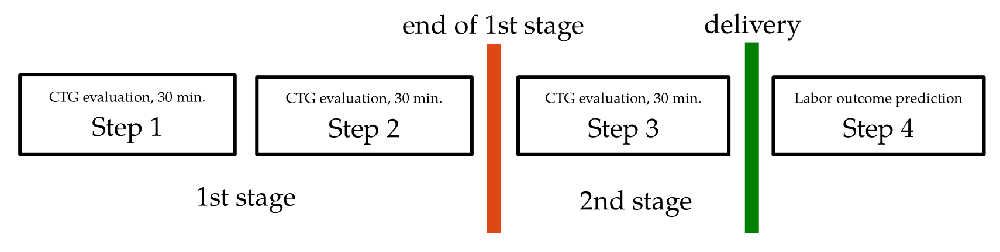

Expert annotations for the CTU-UHB database.
The CTGAnnotator was used to obtain annotation of the CTG recordings from nine expert-obstetricians. The CTGAnnotator presented the CTG trace in form of consecutive 30-minute windows together with basic clinical information. Each window was expected to be evaluated based on FIGO criteria by assigning it to one of the three classes (Normal/Suspicious/Pathological). All obstetricians working on delivery wards of six Obstetrics and Gynecology Departments of all the University Hospitals in the Czech Republic have been currently practicing delivery ward doctors with median experience of 15 years (minimum 10, maximum 33). Based on the data structure each recording was presented in four steps, see Figure below.
- 30 minutes long window beginning at maximum one hour before the end of the first stage of labor
- 30 minutes long window beginning at maximum 30 minutes before the end of the first stage of labor
- Full second stage of labor signal presented for evaluation if five minutes or more of CTG signal was available
- Evaluation of labor outcome – prediction of umbilical artery pH after delivery
- rec_id - identification of records (corresponds to the physionet ID, values: [1001-1506],[2001,2046])
- expert_id - identification of clinicicians, values: [1,2,...,9]
- eval_step1-3 - annotation of step 1 to 3, values (normal=1, suspicious=2, pathological=3, uninterpretable=-1)
- eval_step4 - annotation of step 4, values (no hypoxia=1, mild hypoxia=2, severe hypoxia=3, uninterpretable=-1)
An Example:
First line of the annotation file reads: 1001,1, 1,1,2,1
This means that record 1001 was annotated by clinician 1. With annotations for steps 1-4 as: normal, normal, supicious, and no hypoxia
Note the presence of repeated records (annotated more than once to examine intra-observer agreement).
For example record 1013 annotated by clinicians 1 and 2:
1013,1, 1, 1,3,2
1013,1, 1, 1,2,2
1013,2, 1,-1,2,2
1013,2, 1, 1,3,2
License: The expert annotations are free to use for non-commercial purposes, given that any publication using the database refers to the publication:
L. Hruban, J. Spilka, V. Chudáček, P. Janků, et al.
Agreement on intrapartum cardiotocogram recordings between expert obstetricians
In Journal of Evaluation in Clinical Practice, 21(4): 694-702, 2015.
Annotations in the CSV format: ExpertAnnCTU-UHB-CTG_20150203.csv